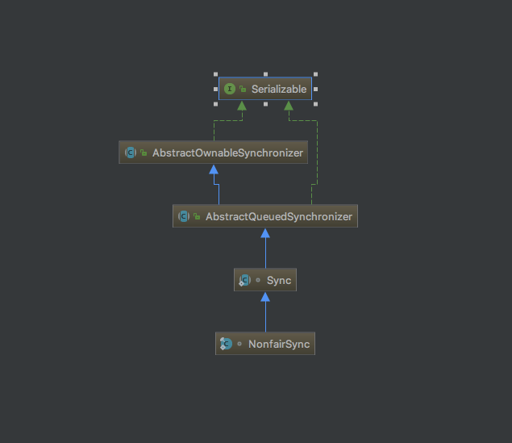
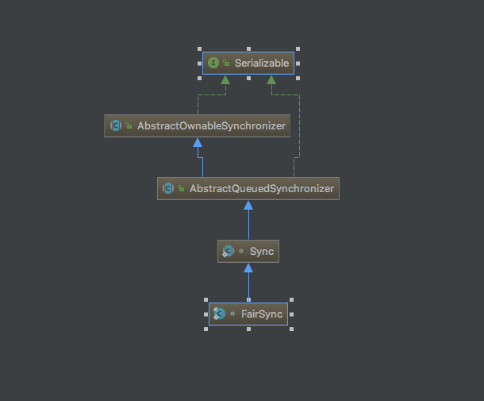
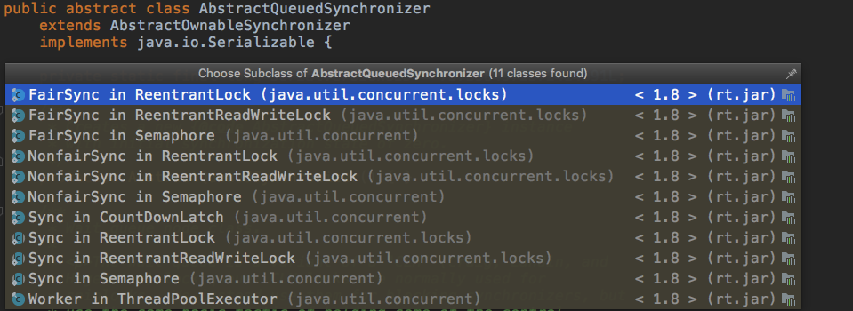
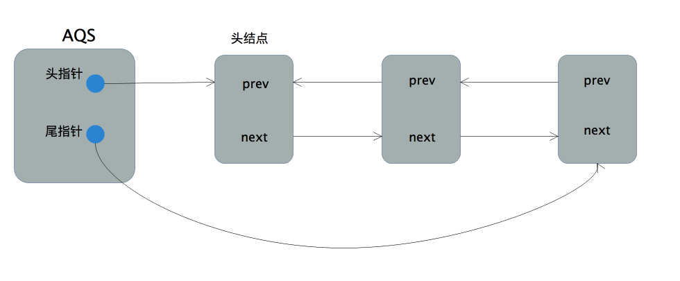

前言
在Java并发相关知识中，对锁的了解一直非常粗浅。面试也只知道 synchronized 关键字和 ReentrantLock 之间的区别，各自有什么优点，使用场景分别是什么等，但是对这两种并发解决方案的底层实现和原理一知半解。近日结合相关源码和解析博客，慢慢增加对两者的深层理解。有幸看到这篇文章，看之需细细咀嚼，讲解颇为细致，故以此为基础，对比源码，再附上对原文的理解，进行学习。
一、介绍
ReentrantLock可以有公平锁和非公平锁的不同实现,只要在构造它的时候传入不同的布尔值,继续跟进下源码我们就能发现,关键在于实例化内部变量 sync 的方式不同,如下所示


该抽象类为我们的加锁和解锁过程提供了统一的模板方法，只是一些细节的处理由该抽象类的实现类自己决定。所以在解读ReentrantLock(重入锁)的源码之前,有必要了解下AbstractQueuedSynchronizer。
二、AbstractQueuedSynchronizer介绍
2.1、AQS是构建同步组件的基础
AbstractQueuedSynchronizer,简称AQS,为构建不同的同步组件(重入锁,读写锁,CountDownLatch等)提供了可扩展的基础框架,如下图所示。

AQS以模板方法模式在内部定义了获取和释放同步状态的模板方法,并留下钩子函数供子类继承时进行扩展,由子类决定在获取和释放同步状态时的细节,从而实现满足自身功能特性的需求。除此之外,AQS通过内部的同步队列管理获取同步状态失败的线程,向实现者屏蔽了线程阻塞和唤醒的细节。
这样介绍未免有些官方。那AQS究竟是什么，我们提一个问题来侧面解释AQS的本质：我继承了AbstractQueuedSynchronizer，那我能干什么？
我继承了AQS，当然也继承了AQS的一部分方法，我们只看最关键的两个方法：
1 | //申请获取锁 |
从方法上看，什么角色才会有加锁和解锁的行为？锁的本身。也就是说，我只要继承了AQS，我就是一把锁。加锁和解锁的模板和关键步骤已经定义好，具体每个步骤如何定义，不同的锁的类别有不同的实现。你公平锁有公平的实现方式，我非公平锁有非公平的解决方案。但无论AQS下的任何类型的锁，关键步骤已经定义好了。
在AQS 中使用了模板方法的设计模式
2.2、AQS的内部结构(ReentrantLock的语境下)
AQS的内部结构主要由同步等待队列构成
2.2.1、同步等待队列
AQS中同步等待队列的实现是一个带头尾指针(这里用指针表示引用是为了后面讲解源码时可以更直观形象,况且引用本身是一种受限的指针)且不带哨兵结点(后文中的头结点表示队列首元素结点,不是指哨兵结点)的双向链表。
1 | /** |
head是头指针,指向队列的首元素;tail是尾指针,指向队列的尾元素。而队列的元素结点Node定义在AQS内部,主要有如下几个成员变量
1 | volatile Node prev; //指向前一个结点的指针 |
- prev:指向前一个结点的指针
- next:指向后一个结点的指针
- thread:当前结点表示的线程,因为同步队列中的结点内部封装了之前竞争锁失败的线程,故而结点内部必然有一个对应线程实例的引用
- waitStatus:对于重入锁而言,主要有3个值。0:初始化状态；-1(SIGNAL):当前结点表示的线程在释放锁后需要唤醒后续节点的线程；1(CANCELLED):在同步队列中等待的线程等待超时或者被中断,取消继续等待。（其他状态暂且不管）
同步队列的结构如下图所示

了接下来能够更好的理解加锁和解锁过程的源码,对该同步队列的特性进行简单的讲解:
- 同步队列是个先进先出(FIFO)队列,获取锁失败的线程将构造结点并加入队列的尾部,并阻塞自己。如何才能线程安全的实现入队是后面讲解的重点,毕竟我们在讲锁的实现,这部分代码肯定是不能用锁的。
- 队列首结点可以用来表示当前正获取锁的线程。
- 当前线程释放锁后将尝试唤醒后续处结点中处于阻塞状态的线程。
为了加深理解,还可以在阅读源码的过程中思考下这个问题：
这个同步队列是FIFO队列,也就是说先在队列中等待的线程将比后面的线程更早的得到锁,那ReentrantLock是如何基于这个FIFO队列实现非公平锁的？
2.2.2 AQS中的其他数据结构(ReentrantLock的语境下)
同步状态变量：
1 | /** |
这是一个带volatile前缀的int值,是一个类似计数器的东西。在不同的同步组件中有不同的含义。以ReentrantLock为例,state可以用来表示 该锁被线程重入的次数。当state为0表示该锁不被任何线程持有;当state为1表示线程恰好持有该锁1次(未重入);当state大于1则表示锁被线程重入state次。因为这是一个会被并发访问的量,为了防止出现可见性问题要用volatile进行修饰。
- 原文是当state大于1时，则表示重入state次，但我感觉是state - 1次，因为 state为1时表示的是未重入。
- state AQS中的属性，AQS中只能有一个线程节点获取到锁，所以 state 是服务于当前获得锁的线程，获取锁的线程是队列中的 head，所以 state是head的重入情况。
持有同步状态的线程标志：
1 | /** |
如注释所言,这是在独占同步模式下标记持有同步状态线程的。ReentrantLock就是典型的独占同步模式,该变量用来标识锁被哪个线程持有。
了解AQS的主要结构后,就可以开始进行ReentrantLock的源码解读了。由于非公平锁在实际开发中用的比较多,故以讲解非公平锁的源码为主。以下面这段对非公平锁使用的代码为例:
1 | /** |
三、总结
回过头来，我们再问自己之前的这个问题：我继承了AbstractQueuedSynchronizer，那我能干什么？
我能加锁和解锁，我，就是锁。像我们的主角 —— ReentrantLock，它的特殊性就是可重入。
以上都是个人愚见，如有理解不对的地方还望指出，大家一起交流，一起进步。
下一节：ReentrantLock（二） —— 非公平模式加锁流程